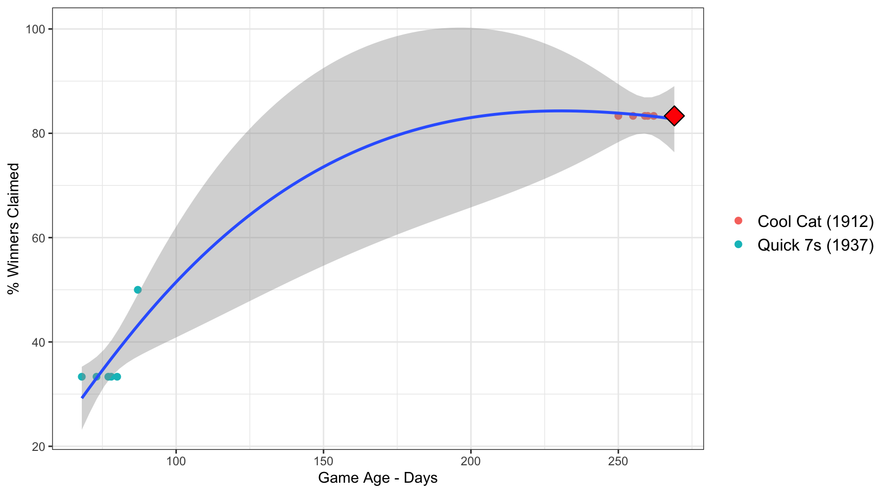
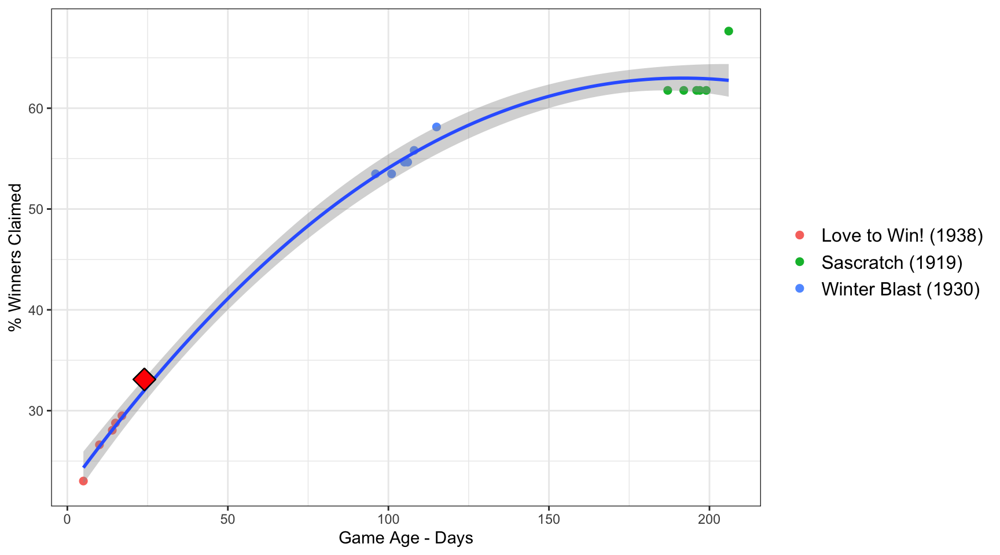
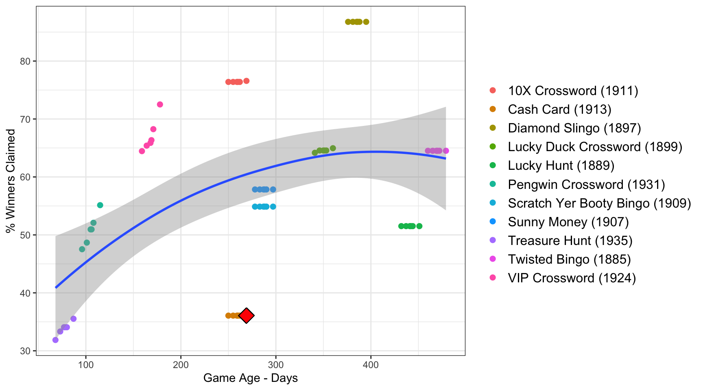
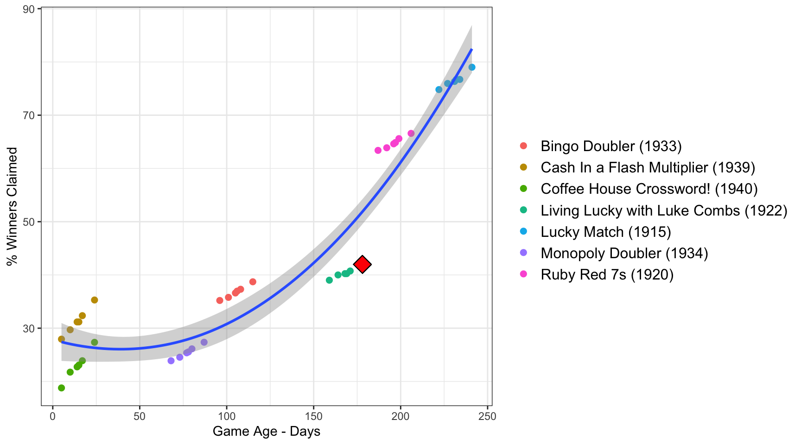
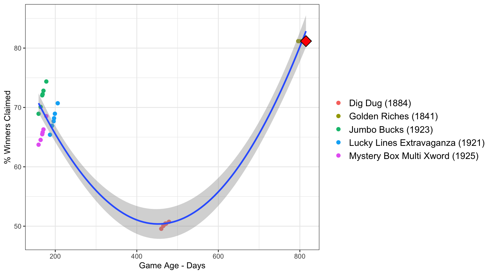
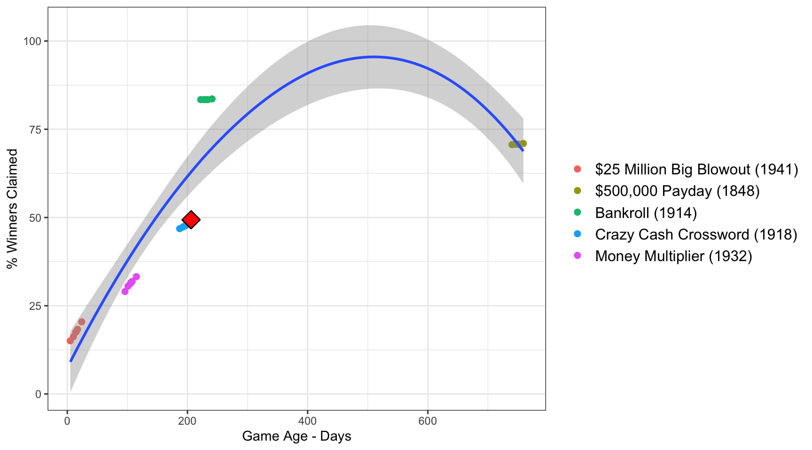
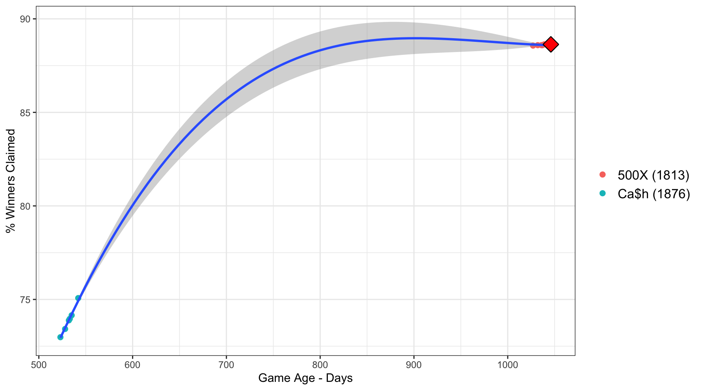

Best-Scratch-Offs.com uses advanced data analysis to help you find the best Minnesota scratch-off games. Our experts have determined the games with the highest odds of picking a winning ticket worth $500 or more.
Check out our detailed analysis tab for a thorough breakdown for each $ amount, so you can make an informed decision on which game to buy. Our Games Data section provides comprehensive information for all Minnesota scratch-off games.
Trust us to provide the insights you need to improve your odds of winning big on scratch-off tickets in Minnesota. Keep reading to find the best games to play and increase your chances of winning.
The Best $1 Game to play right now is Quick 7s (1937). Only 33.3% of winning tickets have been claimed. Typically for a 80 day old game 33.7% of winners have been claimed.

The Best $2 Game to play right now is Sascratch (1919). Only 61.8% of winning tickets have been claimed. Typically for a 199 day old game 61.6% of winners have been claimed.

The Best $3 Game to play right now is Cash Card (1913). Only 36.1% of winning tickets have been claimed. Typically for a 262 day old game 60% of winners have been claimed.

The Best $5 Game to play right now is Living Lucky with Luke Combs (1922). Only 40.7% of winning tickets have been claimed. Typically for a 171 day old game 49.6% of winners have been claimed.

The Best $10 Game to play right now is Mystery Box Multi Xword (1925). Only 66.3% of winning tickets have been claimed. Typically for a 171 day old game 68.4% of winners have been claimed.

The Best $20 Game to play right now is Crazy Cash Crossword (1918). Only 48.5% of winning tickets have been claimed. Typically for a 199 day old game 61.7% of winners have been claimed.

The Best $50 Game to play right now is CaSh (1876). Only 74.2% of winning tickets have been claimed. Typically for a 535 day old game 74.1% of winners have been claimed.
